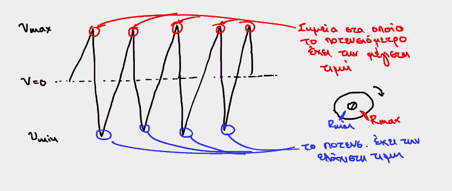
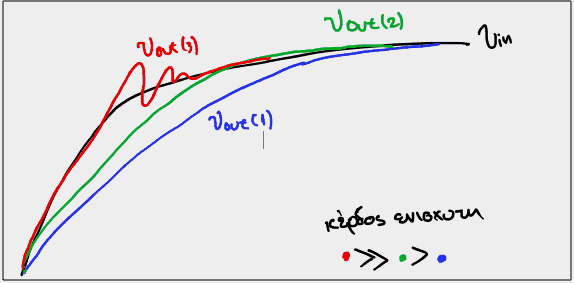
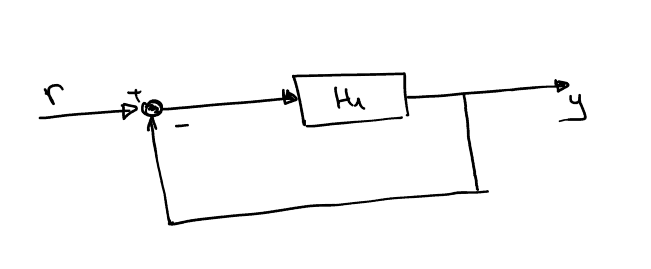
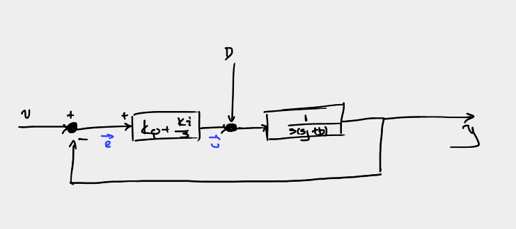

Διάλεξη 1: Εισαγωγική και σφάλματα
Table of Contents
Εισαγωγικά
Ποιο είναι το αντικείμενο του μαθήματος? Ο καθορισμός της μεταβλητής που μας ενδιαφέρει βάση των μεταβλητών (εισόδων) του συστήματος. Εκείνες (μεταβλητές εισόδου) χωρίζονται σε μεταβλητές ελέγχου και μεταβλητές θορύβου (δεν είναι αυτή η έννοια που χρησιμοποιήθηκε, αλλά είναι σημασιολογικά σωστή).
Ο στόχος είναι η ανάλυση συστημάτων. Μια γενική μεθοδολογία:
- Βρίσκεις γενικότερη μαθηματική έκφραση, την αναλύεις βάση σήματος εισόδου και εξόδου
- Βγάζεις την μαθηματική έκφραση του ελεγκτή που θέλεις
- Υλοποιείς τον ελεγκτή εντός του κυκλώματος.
Βασικές έννοιες
- Η φύση του προβλήματος
Εξαρτάται από τον τύπο της εισόδου: αν εκείνη είναι σταθερή, τότε λέμε πως έχουμε πρόβλημα ελέγχου ρύθμισης. Αλλιώς, αν εκείνη μεταβάλλεται συναρτήσει κάποιας παραμέτρου (έστω του χρόνου) λέμε πως έχουμε πρόβλημα ελέγχου παρακολούθησης, και την παράμετρο την λέμε και τροχιά
- Συστήματα κλειστού δρόμου:
- Είσοδος αναφοράς: καθορίζει το τί θέλουμε να κάνει η έξοδος
- Συνάρτηση μεταφοράς
Συνάρτηση μεταφοράς του συστήματος (ως προς μία μεταβλητή εισόδου) ονομάζουμε την συνάρτηση - πηλίκο του μετασχηματισμού Laplace της εξόδου προς τον μετασχηματισμό Laplace της εισόδου:
\begin{equation} \label{eq:16} \frac{Y(s)}{R(s)} = \frac{\mathcal{L}[y]}{\mathcal{L}[r]} \end{equation}
Επανάληψη Μόνιμη κατάσταση
- Μαθηματικά:
Η έξοδος του συστήματος όταν ο χρόνος τείνει στο άπειρο ( εφόσον το όριο υπάρχει. Αν δεν υπάρχει (ασταθές σύστημα) δεν έχουμε μόνιμη κατάσταση )
- Πρακτικά
Όταν ουσιαστικά έχει εξασθενήσει η επιρροή οποιασδήποτε απρόσμενης μεταβολής.
Μας λεει αυτό ( χρήση Laplace )
\begin{equation} \label{eq:14} \lim_{t\to \infty}f(t) \Rightarrow \lim_{s\to 0} sf(s) \end{equation}Προδιαγραφές λειτουργίας
Ουσιαστικά θα αναλύσουμε αυτά στην διάρκεια του εξαμήνου. Θα εξεταστούν πρωτα τα 1-3 και μετα κάποια στιγμή θα περάσουμε στο 4.
- Ακρίβεια στην μόνιμη κατάσταση
- Ταχύτητα απόκρισης
- Ευστάθεια και σχετική ευστάθεια.
- Απόσβεση διαταραχών του θορύβου.
- Κλασσικές συναρτήσεις εισόδου(?):
Επισημάνθηκε και η σημασία γρήγορης αναγνώρισης των μετατροπών Laplace των παρακάτω συναρτήσεων:
- βηματική
- Ράμπας
- παραβολής
- συνάρτηση \(\delta\)
- ημιτονοειδής συναρτήσεις
Παράδειγμα Σταμούλη
Επίδειξη απλού συστήματος. Κινητήρας, ελεγκτής και εμφάνιση τελικής λειτουργίας στην οθόνη μέσω παλμογράφου.
- Τιμή ποτενσιομέτρου (τάσης στα άκρα αυτού) ως ένδειξη θέσης (γωνίας-φάσης)
περιστρεφόμενης εξόδου.
Η έξοδος στον παλμογράφο φαίνεται παράξενη: είναι σαν να λέμε τριγωνική Πέφτει απότομα λόγω της φύσεως του ποτενσιομέτρου καθώς από την πλήρως θετική τιμή ( ή θεωρητικά πλήρως αρνητική τιμή αν εφαρμοστεί αντίθετη τάση στα άκρα του ) πάει στην ακραία αρνητική τιμή ( ή ακραία θετική (θεωρητικά) αντίστοιχα).

Επίδραση κέρδους ενισχυτή
Το κέρδος ενίσχυσης του ελεγκτή επηρεάζει σημαντικά την μορφή της εξόδου του συστήματος. Αν και μειώνει τον χρόνο αποκατάστασης (δηλαδή κατα την μεταβολή της εισόδου μειώνει τον χρόνο που χρειάζεται η έξοδος να πιάσει την επιθυμητή τιμή), εισάγει ταλάντωση ( το σύστημα περνάει εκείνη την τιμή και ταλαντώνεται μέχρι να μείνει σε εκείνη ).

Παράδειγμα Δουλγέρη στον πίνακα
Έχουμε το παρακάτω σύστημα:

Εύκολα προκύπτει πως περιγράφεται από τις:
\begin{align} \label{eq:1} \begin{cases} r &= L \frac{di}{dt} + Ri + \frac{1}{C} \int i dt\\ y &= \frac{1}{C} \int i dt\\ \end{cases} \end{align}Έτσι έχουμε την συνάρτηση μεταφοράς:
\begin{equation} \label{eq:2} H(s) = \frac{Y(s)}{R(s)} \end{equation}Επομένως η αρχική μας εξίσωση γίνεται:
\begin{equation} \label{eq:3} U(s) = {\mathcal L}[u(t)] = Y(s)(s^2LC + s CR + 1) \end{equation}Συνδέοντας την είσοδο με την έξοδο σε μία πολύ απλή σχέση.
Unexpected
Αυτό είναι κάτι που συνειδητοποίησα την ώρα που λύναμε το παράδειγμα και, παρόλο που φαντάζομαι πολλοί θα το ήξεραν εκ των προτέρων: η λύση συστημάτων με σύνθετη αντίσταση δεν είναι τίποτα άλλο παρά ανάλυση με Laplace στο πεδίο της συχνότητας
Παράδειγμα αναρτήσεων αυτοκινήτου
Έστω λοιπόν πως έχουμε το παρακάτω σύστημα αναρτήσεων ενός αυτοκινήτου (ελατήριο και υγρό για απορρόφηση των ταλαντώσεων του πηνίου)

Έχουμε τις παρακάτω εξισώσεις, οι οποίες περιγράφουν γενικά το σύστημα:
\begin{align} \label{eq:4} F &= ma\\ F &= k\delta x\\ F &= bv \end{align}Όπου \(\delta{x} = x_{out}-x_{in}\), με \(x_{out}\) την μεταβολή του ύψους του κορμού του αυτοκινήτου, και \(x_{in}\) τις όποιες ανωμαλίες υπάρξουν ως είσοδος στο σύστημα μας:
Οπότε προκύπτει η διαφορική:
\begin{equation} \label{eq:5} m x^{(2)} + b(x_0^{(2)} - x_i^{(2)}) + k(x_0-x_i) = 0 \end{equation}Εδώ μια ερώτηση είναι γιατί είναι ο πρώτος όρος \(mx^{(2)}\) και όχι \(m(x_o^{(2)}-x_i^{(2)})\). Αν το ερμηνεύω σωστά είναι \(F=mx_o^{(2)}\) καθώς ο νόμος του Νεύτωνα εφαρμόστηκε (όπως και η παραπάνω εξίσωση) στο κυρίως σώμα του αυτοκινήτου, την μετατόπιση του οποίου ορίσαμε και \(x_{out}\)
\begin{equation} \label{eq:6} \mathcal{L}[\cdots] \Rightarrow (ms^2 + bs +k)x_0(s) = (bs + k) x_i(s) \end{equation}Η συνάρτηση μεταφοράς
\begin{equation} \label{eq:7} H(s) = \frac{bs+k}{ms^2+bs+k} \end{equation}Πόλοι και μηδενικά.
Όταν μια συνάρτηση μεταφοράς μπορεί να εκφραστεί στην παρακάτω μορφή, λέμε πως έχουμε πόλους και μηδενικά:
\begin{equation} \label{eq:8} H(s) = \frac{N(s)}{D(s)} \stackrel{nom, denom}{=} \frac{\prod_i (s-z_i)}{\prod (s-p_i)} \end{equation}Σε αυτή την μορφή είναι εμφανείς οι ρίζες του αριθμητή και του παρονομαστή, με τα \(p_i\) (ρίζες) που μένουν μετά την απλοποίηση να λέγονται πόλοι του συστήματος.
Αντιστοίχως η μη απλοιποιούμενες ρίζες του αριθμητή λέγονται μηδενικά
Συναρτήσεις μεταφοράς σε σειρά
Σε περίπτωση που έχεις πολλαπλά συστήματα μεταφοράς, υπό συνθήκες:
\begin{equation} \label{eq:9} H(s) = H_{1}(s)H_2(s) \end{equation}
Η συνθήκη είναι:
Η έξοδος του πρώτου συστήματος να μην επηρεάζεται από την παρουσία του δεύτερου συστήματος εκεί.
Παράδειγμα στα κυκλώματα θα μπορούσε να είναι η απειρη αντίσταση εξόδου, ούτως ώστε να μην επηρεάζεται η έξοδος του πρώτου συστήματος.
Σημαντικό, όμως, είναι να υπογραμμίσουμε ότι στην πλειοψηφία των συστημάτων που θα εξετάσουμε στο πλαίσιο του μαθήματος, ακολουθούμε την θεώρηση πως είναι ιδανικά, που σημαίνει πως η παραπάνω ιδιότητα είναι εφαρμόσιμη εκτός αν ρητά επισημαίνεται το αντίθετο
Αρχή της επαλληλίας

Η αρχή της επαλληλίας είναι εφαρμόσιμη στα εξεταζόμενα συστήματα, καθώς αυτά γραμμικά. Μπορούμε λοιπόν να υπολογίσουμε την συνάρτηση μεταφοράς του \(Y\) ως προς \(r\) (την είσοδο ελέγχου) και κατόπιν ως προς την \(d\).
Καταλήγουμε έτσι στις παρακάτω σχέσεις:
\begin{equation} \label{eq:10} T_r(s) = \frac{Y(s)}{r(s)} = \cdots = \frac{G(s)}{1+GH} \end{equation}Αυτή η σχέση ισχύει για όλα τα συστήματα κλειστού δρόμου με ανάδραση \(h\)
Εδώ η άσκηση κανονικά συνεχίζει μα καθώς δεν μπορούσα να καταλήξω σε αποτέλεσμα που να συμφωνεί με εκείνο των σημειώσεων έχει αφεθεί εκτός.
Πιο σύνθετο παράδειγμα

Οπότε προκύπτει και η συνάρτηση μεταφοράς:
\begin{equation} \label{eq:13} G(s) = \frac{H_2(k+H_1)}{1+H_1+H_2} \end{equation}Σφάλμα εισόδου
Ορίζουμε νέο μέγεθος, το λάθος, το οποίο συμβολίζουμε με \(e\) και δίνεται από την σχέση:
\begin{equation} \label{eq:15} e(s) = r(s) - y(s) \end{equation}Αν και το ορίσαμε με αυτή την γενική σχέση στην πραγματικότητα μας ενδιαφέρουν, και προσπαθούμε να τους εξασφαλίσουμε μηδενικές τιμές:
- Σφάλμα θέσης, όταν η συνάρτηση εισόδου είναι η βηματική
- Σφάλμα ταχύτητας, όταν η συνάρτηση εισόδου είναι ράμπα
- Σφάλμα επιτάχυνσης, όταν η συνάρτηση εισόδου είναι παραβολική
Γιατί σταματάμε στην επιτάχυνση και δεν συνεχίζουμε? Γιατί το να πετύχεις στην πράξη σφάλμα μηδεν σε μεγαλύτερη τάξη είναι εξαιρετικά δύσκολο και επηρεάζει την ευστάθεια του συστήματος.
\begin{align} \label{eq:69} e_{ssp} &= \frac{1}{s} - y(s)&\text{position}\\ e_{ssv} &= \frac{1}{s^2} - y(s) &\text{velocity}\\ e_{ssa} &= \frac{1}{s^3} - y(s)&\text{acceleration} \end{align}Δίνοντας συγκεκριμένους τύπους
Οι παρακάτω τύποι, όπου εμφανίζονται όρια, προφανώς συνδέονται με το θεώρημα τελικής τιμής από τις βασικές έννοιες.
- Μοναδιαία Αρνητική Ανάδραση
Έχουμε το κλασσικό σύστημα μοναδιαίας αρνητικής ανάδρασης: 
Είναι γνωστό πως η συνάρτηση μεταφοράς δίνεται από την:
\begin{equation} \label{eq:68} \frac{Y}{R} = \frac{H_1}{1+H_1} \end{equation}Επομένως η αρχική εξίσωση μας γίνεται:
\begin{equation} \label{eq:31} e(s) = r(s) - y(s) = r(s) - \frac{H_1}{1+H_1}r(s) = r(s)(1-\cdots) = r(s) \frac{1}{1+H_1} \end{equation}Απο αυτό αντικαθιστώντας στις εξισώσεις για τα επιμέρους σφάλματα:
\begin{align} \label{eq:79} e_{ssp} &\stackrel{r = 1}{ = } \frac{1}{s} \frac{1}{1+H_1} \stackrel{FinalValueTheorem}{=} \frac{1}{1+\lim_{s\to0}H(s)} &\text{position}\\ e_{ssv} &\stackrel{r = linear}{ = } \frac{1}{s^2} \frac{1}{1+H_1} \stackrel{FinalValueTheorem}{ = } \frac{1}{\lim_{s\to0}sH(s)} &&\text{velocity}\\ e_{ssa} &\stackrel{r = parab}{ = } \frac{1}{s^3} \frac{1}{1+H_1} \stackrel{FinalValueTheorem}{ = } \frac{1}{\lim_{s\to0}s^2H(s)} &&\text{acceleration} \end{align}- Σταθερές ορίων
Ουσιαστικα οι σταθεροί όροι που εμφανίζονται με μορφή ορίων στα αντίστοιχα όρια ονομάζονται σταθερα σφαλματος θεσης, ταχύτητας, επιταχυνσης
\begin{align} \label{eq:27} K_p &= \lim_{s\to0} H(s)\\ K_v &= \lim_{s\to0} sH(s)\\ K_a &= \lim_{s\to0} s^2H(s) \end{align}Και έχουμε
- Σταθερές ορίων
- Γενική Περίπτωση (Closed Loop)
Προφανώς, όμως, η παραπάνω ανάλυση, καθώς βασίζεται στην συνάρτηση μεταφοράς συστήματος με μοναδιαία αρνητική ανάδραση δεν είναι εφαρμόσιμη σε όλες τις περιπτώσεις. Σε εκείνες έχουμε: (έστω \(H_2\) το σύστημα στην ανάδραση)
Χρησιμοποιώντας την συνάρτηση μεταφοράς στο πιο σύνθετο πλέον σύστημα:
\begin{equation} \label{eq:32} Y(s) \stackrel{cl = closed loop}{=} H_{cl }r(s) = \frac{H_1}{1+H_1H_2}r(s) \end{equation}Έτσι έχουμε
\begin{equation} \label{eq:33} e(s) = r(s)(1 - \frac{H_1}{1+H_1H_2}) = r(s)(1 - H_{cl}) \end{equation}Και κατ’επέκταση, τις εξισώσεις για τα επιμέρους σφάλματα:
\begin{align} \label{eq:34} e_{ssp} &= \frac{1}{s}(1-H_{cl}) \stackrel{FVT}{ = } \lim_{s\to0} (1-H_{cl})\\ e_{ssp} &= \frac{1}{s^2}(1-H_{cl}) \stackrel{FVT}{ = } \lim_{s\to0} s(1-H_{cl})\\ e_{ssp} &= \frac{1}{s^3}(1-H_{cl}) \stackrel{FVT}{ = } \lim_{s\to0} s^2(1-H_{cl}) \end{align}
Τύπος συστήματος
Παραπάνω αναφέραμε τους πόλους και τα μηδενικά μίας συνάρτησης. Ανάλογα με την φύση των πόλων ορίζουμε και τον τύπο του συστήματος μας. Αναλυτικότερα, το πλήθος των πόλων στο σημείο μηδεν ισούται με τον τύπο του συστήματος όπως φαίνεται στον παρακάτω πίνακα:
| Αριθμός πόλων στο 0 | Τύπος αντίστοιχου συστήματος |
|---|---|
| 0 | Τύπου 0 |
| 1 | Τύπου 1 |
| … | … |
| Ν | Τύπου Ν |
Τι σημαίνει ο τύπος συστήματος για τις τιμές των σφαλμάτων;
Ο τύπος συστήματος μας δείχνει ποιο επίπεδο σφάλματος θα είναι το τελευταίο που θα έχει τιμή πραγματικού αριθμού (βασικά θα είναι το μόνο που μπορεί να έχει μη μηδενική τιμή πραγματικού αριθμού). Ενδεικτικά, ισχύει το παρακάτω πινακάκι όπου μας δείχνει τα σφάλματα ανά τύπο σε σύστημα με μοναδιαία αρνητική ανάδραση:
| τύπος | σφάλμα θέσης | σφάλμα ταχύτητας | σφάλμα επιτάχυνσης |
|---|---|---|---|
| τύπου 0 N = 0 | \(\frac{1}{1+G}\) | \(\infty\) | \(\infty\) |
| τύπου 1 N = 1 | \(0\) | \(\frac{1}{G}\) | \(\infty\) |
| τύπου 2 N = 2 | \(0\) | \(0\) | \(\frac{1}{G}\) |
Παρατηρούμε λοιπόν πως η αύξηση του \(G\) συνεπάγεται μείωση των σφαλμάτων.
Τελευταία άσκηση:
Έχουμε το παρακάτω σύστημα
όπου, όπως φαίνεται και στην εικόνα είναι:
\begin{align*} H_1 &= K\\ H_{2} &= \frac{1}{s(\jmath s + b)} \end{align*}Ζητείται \(e_{ssp}= 0\)
Αρχικά υπολογίζουμε τις επιμέρους συναρτήσεις αναφοράς
\begin{align} \label{eq:29} \frac{Y(s)}{R(s)} &= \frac{k}{s^2j+bs+k}\\ \frac{Y(s)}{D(s)} &= \frac{1}{s^2j+bs+k} \end{align}Για τα σφάλματα.
Είτε πάει κανείς από ορισμό και FVT είτε πάει με τις σταθερές καταλήγουμε στο ίδιο αποτέλεσμα:
Ως προς \(y\):
\begin{align} \label{eq:35} e_{ssp} &= 0\\ e_{ssv} &= \frac{b}{k}\\ e_{ssa} &= \infty \end{align}- Ενώ ως προς την \(D\):
Βελτιώνοντας το σύστημα
Επομένως για να μηδενίσουμε το σφάλμα θέσης θα πρέπει να αλλάξουμε τον ελεγκτή μας.
Μπορούμε να τον αντικαταστήσουμε με έναν της μορφής:
\begin{equation} \label{eq:30} u = (K_p+ \frac{K_i}{s})e(s) \end{equation}Με αυτόν τον τρόπο παρατηρούμε πως η συνάρτηση μεταφοράς (ως προς την είσοδο αναφοράς) είναι τύπου 2 επομένως ξέρουμε ήδη πως για την \(y\) το σύστημα έχει ήδη βελτιωθεί:
\begin{align} \label{eq:37} e_{ssp} &= 0\\ e_{ssv} &= 0\\ e_{ssa} &= \frac{b}{K_i} \end{align}Αντίστοιχα (προστίθοντας τον ολοκληρωτή πριν την είσοδο της διαταραχής):
\begin{equation} \label{eq:38} e_{ssp} = \cdots = 1 \end{equation}Το οποίο μας δείχνει δηλαδή ότι η διαταραχή απορροφάται από το σύστημα και δεν εμφανίζεται στην έξοδο.
